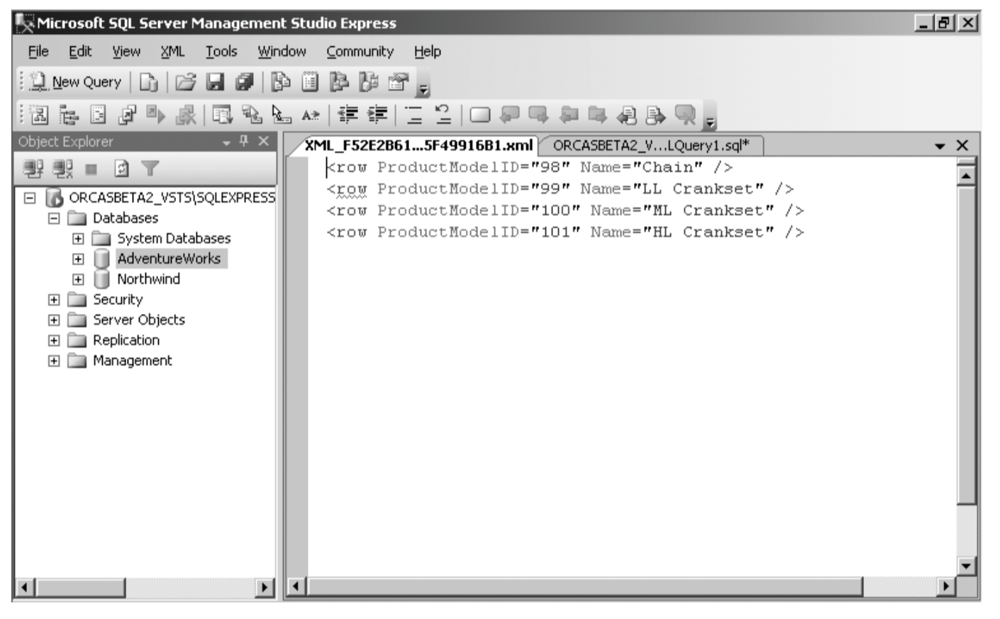
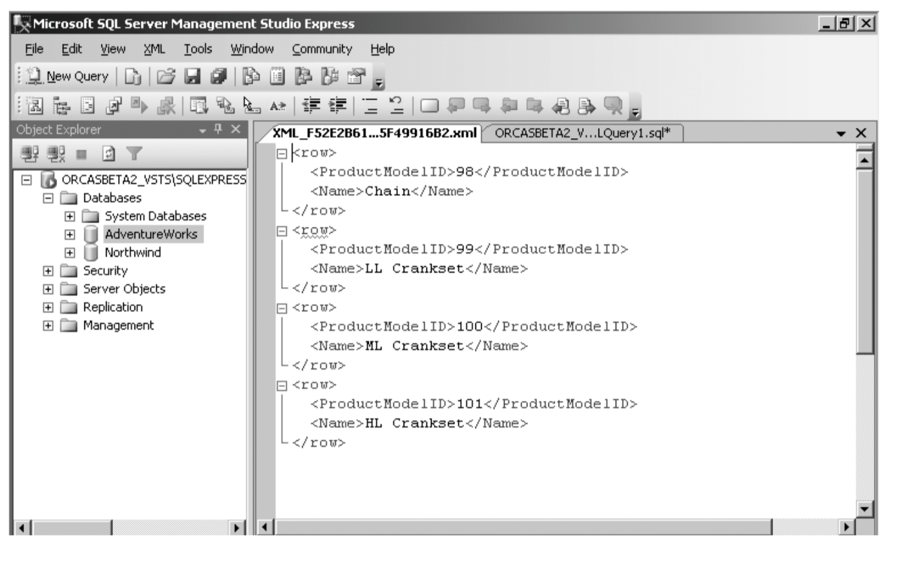

XML
Meta-language isn’t used for programming but rather for defining other languages, and the languages XML defines are known as markup languages. Used for Marking up something.
- XML is extensible: it does not consist of a fixed set of tags;
- XML documents must be well-formed according to a defined syntax.
- An XML document can be formally validated against a schema of some kind.
- XML is more interested in the meaning of data than in its presentation.
Tags
<food></food>
An Attribute
<grade id="1">
Value
<name>Mike</name>
Json
{
"company": "Volkswagen",
"name": "vento",
"price": 80000
}
XML
<car>
<company>Volkswagen</company>
<name>Vento</name>
<price>80000</price>
</car>
Tree Structure
XML documents has a tree structure.
An XML tree starts at a root element and branches from the root to child elements.
<root>
<child>
<subchild>.....</subchild>
</child>
</root>
The
<title lang="en">Everyday Italian</title>
<author>Giada De Laurentiis</author>
<year>2005</year>
<price>30.00</price>
Retrieve XML from SQL queries
SQL
SELECT album.Title, Kunstner.Name
FROM dbo.Artist as Kunstner
INNER JOIN dbo.Album
ON Kunstner.ArtistId=Album.ArtistId
WHERE Kunstner.Name = 'Frank Sinatra'
FOR XML AUTO;
XML
<dbo.Album Title="My Way: The Best Of Frank Sinatra [Disc 1]">
<Kunstner Name="Frank Sinatra" />
</dbo.Album>
Retrive from SQL in XML
SELECT ProductModelID, Name
FROM Production.ProductModel
WHERE ProductModelID between 98 and 101
FOR XML RAW
Result

It turns each row in the result set into an XML row empty element and uses an attribute for each of the column values, using the alias names you specify in the query as the attribute names.
FOR XML RAW,ELEMENTS

It turns each row in the result set where each column is converted into an attribute.
XML and SQL
create table xmltest
(
xid int not null primary key,
xdoc xml not null
)